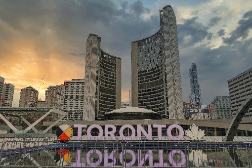

IELTS (International English Language Testing System) is designed to assess the Language ability of one who desires to study and work or migrate to countries where English is Primary Language of all Social Exchange. IELTS is jointly managed worldwide by Cambridge ESOL, British Council and IDP Education Australia.
Candidates who want to study or migrate in countries such as UK, USA, Canada, Australia, New Zealand and Singapore are required to take the IELTS exam as proof of their English Language proficiency.

There are many good reasons to move to Canada and settle there for good. Whether you’re
taken in by the lush landscapes and rocky mountains of Canada, or its lovely cities,
once this beautiful country captures your heart, there’s no looking back.
Immigration to Canada can be done through one of the multiple routes, depending
upon which category you fall into.
While there are many Foreign Education and Immigration Consultants for students
aspiring to study in Canada.
Canada is considered to be one of the best places in the world to live.
Canada has a highly acclaimed education system.
Expenditure on education is very high, ranking second in the G-8 countries.
Canada offers 90 Universities and 150 Colleges and technical institutes, teaching almost every academic program.
Canadian Universities and Colleges have affordable work program, which gives the students an opportunity to work in their related fields and thereby earn credits for the semester.
Students are legally permitted to work 20 hours per week through the semester and full time during scheduled breaks and vacations.
Canada is known for its safe and orderly way of life and welcoming attitude of native Canadians.
Due added advantage is the low cost of living with the most of the amenities provided by the govt.
Globally renowned Universities & Colleges
Affordable Tuition Fees
Work while studying
Post Graduate Work Permit
A definite way to Permanent Residence in Canada
Certificate: This is a qualification awarded upon the successful completion of a 1 year program.
Diploma: This is a qualification acquired after a 1 or 2 years successful study.
Advanced Diploma: This is a 3 year course which then may be transferred to a Bachelor Degree.
Bachelor’s Degree: These are awarded by Universities / University Colleges / Community Colleges after successful completion of a 4 year program.
Post Graduate Diploma/Certificates: These programs may comprise approximately two to three semesters of full time study. These certificates can transfer into Master’s Degrees. They provide intense specializations in one subject area and a chance to gain practical experience along with theoretical. Student with a Bachelor Degree of 3 to 4 years is a prerequisite to enroll in this program.
Master’s Degree: This is a 2 year program to be pursued after a 4 years Bachelor’s or a 3 years Bachelor’s and a 1 year Post Graduate Diploma from Canada. Programs then expect the student to propose and conduct significant original research culminating in a major project thesis.
Doctorate or PhD: The average time frame to complete this program is 4 to 7 years. This is a degree above the Master’s Degree and is required for many high level jobs.
This is with regard to the information provided by Immigration, Refugee and Citizenship Canada (IRCC) concerning the changes made to the current SPP program from India. The program has been renamed as Study Direct Stream (SDS). The students interested in applying through this program need to meet the following criteria.
Pass the IELTS with an overall 6.0 also score 6.0 for all modules; Listening, Reading, Writing and Speaking.
For other PG programs, requirement continues to remain 6.5 overall, with no sub band less than 6.0
Supply a Guaranteed Investment Certificate (GIC) of $10,000 as proof of ability to support oneself.
Provide proof of tuition payment for the first year.